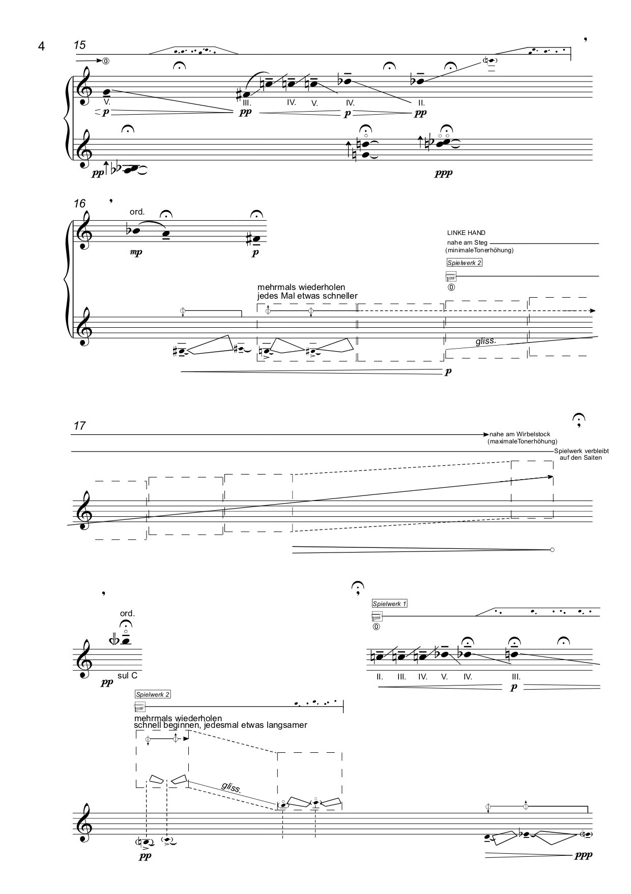
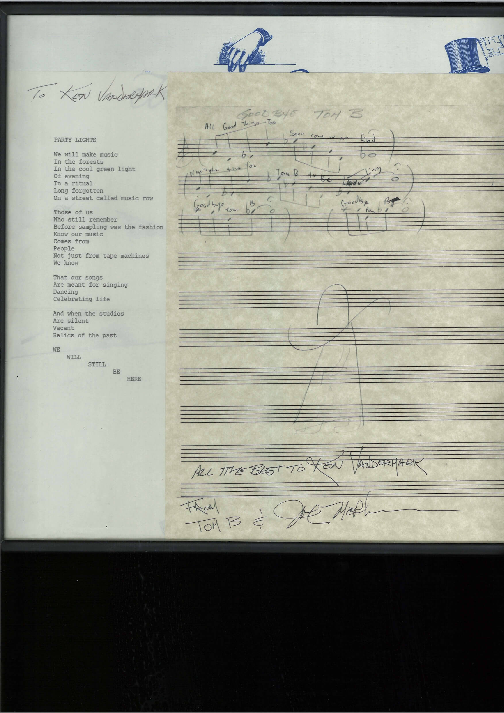

© 2019 Catalytic Sound.
© & ℗ retained by the artists / 2019
Mats Gustafsson
Wantlist of needed heavy, fantastic, beautiful and kicking vinyls
1. Mats Gustafsson
Wantlist of needed heavy, fantastic, beautiful and kicking vinyls
in LP format, September 2019
- Pekka Airaksinen, One Point Music, ORLP 025 (FIN)
- John Coltrane, Cosmic Music, CRS 5000 (USA)
- Alan Davie Music Workshop, ADMW, ADMW 001 (GB)
- Jef Gilson, A Gaveau, SFP 10.004 (FRA)
- Milford Graves & Don Pullen, At Yale University (hand painted cover), SRP 286 (USA)
- Junji Hirose, Solo saxophone, Cacoon 001 (JAP)
- Junji Hirose / Yoshinori Motoki, Chi Chi Chi Nngacah, Cacoon 003 (JAP)
- Joe Harriott & Amancio d`Silva, Hum Dono, Columbia SCX6354 (UK)
- Kosuke Ichihara, Departure, CBS/Sony 50296 L (JAP)
- Roland Kirk, Triple Threat, King 539 (USA)
- Eero Koivistoinen, Valtakunta, Otava OTA LP 66 (FIN)
- Eero Koivistoinen, Odysseus, Otava OTA LP 69 (FIN)
- Byard Lancaster, New Horizons- Sounds of Liberation, Dogtown (USA)
- Pat Patrick, Sound Advice, Saturn 770 (USA)
- Dudu Pukwana and the Spears, Quality LTJs 232 (SA)
- Arman Ratip, The Spy from Istanbul, Regal Zonophone (UK)
- Sam Rivers, Fuchsia Swing Song, Blue Note 4184 (USA)
- Masahiko Satoh, Amalgamation, Liberty Records (JAP)
- Sun Ra, Super Sonic jazz, Saturn 216 (USA)
- Sun Ra, Song of the Stargazers, Saturn 487 (USA)
- Sun Ra, Angels and Demons at Play, Saturn 9956 (USA)
- Sun Ra, Visits Planet Earth, Saturn 207 (USA)
- Cecil Taylor, Jazz Advance, Transition TRLP 19 (USA)
- Mike Taylor, Pendelum, Columbia SX 6042 (UK)
- Uncle Funkenstein, Together again, R & L, AGII 1002 (USA)
- Mal Waldron, Left Alone, Betlehem 6045 (USA)
- The Worlds Experience Orch, The Beginning of a New Birth, World Prod BSE-1(USA)
The list is due to change… and will change… every day new items show… And every day new things appeal…
Every day is a new day…. This is the list of today. Tomorrow is a new day. Every day.
Please email to mats@matsgus.com for trade offers, comments or your own needs and deeds.
Mats Gustafsson sept 15th, 2019

2. Tim Daisy
Inspiration
I’ve been developing a new solo work for glass instruments which I’ll record in November 2019. During the compositional process, I checked out a wide range of sound making from various composers and ensembles, some who have worked with glass, and others who have not. The list presented here is a sample of the work that has inspired me during the development of the new piece.
- Harry Partch “Plectra and Percussion Dances” (1953)
- Meredith Monk “On Behalf of Nature” (2016)
- Paul Lytton “?””!” (2015)
- John Cage “First Construction In Metal” (1939)
- Brian Eno “Music For Airports” (1978)
- Midori Takada “Through The Looking Glass” (1983)
- Susie Ibarra “Drum Sketches” (2007)
3. Ken Vandermark
Project Notes for Momentum Five: Stammer Triptych, part one
"Art provides insight, not entertainment." -Max Beckmann (1938), from The Self-Portrait: from Schiele to Beckmann (Prestel: 2019), edited by Tobias G. Natter, pg. 10.
4. Elisabeth Harnik
Roaming
Elisabeth Harnik: "roaming", composition for solo zither and two music boxes, dedicated to Austrian zither player Martin Mallaun (2016)
The melodic basis for the piece "roaming" is the song "Vaiennut viulu" by the famous Finnish fiddler Konsta Jylhä as well as subtle allusions to the film title music "The Third Man" by the Austrian zither player Anton Karas. Based on this 'mixed space', colours, lines and surfaces emerge that move back and forth between the original melodies with a strolling gesture. Two 'hybrid' music boxes - with the above-mentioned melodies, whose tone combs were interchanged with each other - also create a space 'in between'. There is a mimetic movement between the sound of the zither and the sound of the music box, in which the created mixed spaces intermesh.
This composition and other solo works for piano, violin, phonola, harpsichord, voice and accordion will be released on October 1st 2019 on the ORF Zeitton-CD 'Elisabeth Harnik', Edition Ö1 (Austrian Broadcasting Corporation in coorporation with AKM).
Featured performers: Annelie Gahl, Eva Bajič, Annelie Gahl, Wolfgang Heisig, Sonja Leipold, Martin Mallaun, Gina Mattiello and Krassimir Šterev

5. Sam Clapp
Interview
Ben Hall's drumming spans a wide territory, from delicate contributions to the trio album Raven with Joe Morris and Andria Nicodemou, to the all-out intensity of his work on Spitfire, a duo record with Don Dietrich. He's known for his work with groups Graveyards, New Monuments, and Nate Wooley’s Seven Storey Mountain orchestra, as well as proprietor of label Brokenresearch. But his activities stretch beyond the traditional roles of the improvising drummer--Hall also presents performance and installation art and runs Bap-tizum.com, the largest Black/AfAm spiritual music archive in the world.
That’s on top of his work as chef at the recently-closed Detroit staple Russell Street Deli, and now the owner of packaged soup company Little Pot, where equity and nutrition are high priorities. Catalytic Sound manager Sam Clapp talked with Hall to understand the connections between his seemingly disparate pursuits.
Could you tell me a bit about how you got involved in music?
I was one of those kids who carried around a radio. Like very into it. My parents liked music and I would say that in each of their homes there was pretty much always music playing except when the TV was on. And even then we'd watch music shows, dance shows, things on public access. And radio in Detroit then was pretty bananas. The two main DJs were The Electrifying Mojo, who presented this amazing narrative musical fiasco every night. It opened with a Bond theme, or Star Wars, sound effects and then go into Prince, some electro, that was the time mid-80s, but then also Kraftwerk, Gary Numan, Art of Noise. Classical. It'd be nothing for him to play Beethoven's 9th and then the rest of the show just Prince. Lots of Prince. There's an interview with him and Prince that's amazing so it's nice to go back to that stuff and know that what you were listening to as a kid was important. Then there was The Wizard, who previous to and after that was Jeff Mills. Three turntable stuff. Crazy live mixes. That stuff is pretty foundational in terms of thinking about formal decisions. Selection, blending, drops, live edits. Bambatta, Trommeltanz, Egyptian Lover, What Is A DJ If He Can't Scratch. Tons of Linn drum and 808.
Then the NPR affiliate in Detroit, WDET introduced me to a lot of things too when I was young, sounds, different focus. And then when I was a teenager putting names to a lot of things, Kim Hunter's Radio Free Earth put me up on a ton of things. Art Ensemble, Gil Scott, Grupo Folklorico Y Experimental Nuevayorquino. Then Horace Tapscott, George Lewis, a lot of out jazz that Kim Heron, who is incidentally a cousin to Gil Scott, played on Sunday nights. First time I heard that Sunny Murray at Moers was on his show. Again, just driving around. I can tell you the street I was turning onto. Like really tripping about what I was hearing.
I remember when Ryan Sawyer and I played Moers in Seven Storey Mountain we were both a little disappointed it wasn't the same place in Moers. Anyway just hearing things that heavy just driving around or whatever, it's a real inculcation. First time I heard Theme de Yoyo it was on WDET. I was 19 and it was a weekday on lunch break, me calling the radio station from a payphone like a psycho, "WHAT IS THIS MUSIC? TELL ME."
Then also just border radio, lots of CBC, Glenn Gould, lots of unknown Quebecois little wavelengths breaking through, and then in high school I lived in Vista and Oceanside north of San Diego so also border radio, and also in a different language. Also because southern California, sureno, has lots of car culture, oldies, East Side Story, real vato shit which wasn't so different than Detroit, cookouts, family reunions. Just like a car radio next to some grass with some beers and food, that constitutes a party.
Kind of getting ahead though. My dad was Jackie Wilson's bodyguard when he was still in high school, my dad, he was a big kid, and he knew a lot of people around town, had Monk records which fascinated me, really loved doo-wop, and like Dee Dee Sharp, I Really Love You, Billy Stewart, those were tapes in his car, that kind of sound, but also JJ Cale and Leon Russell, Tulsa shuffle. But we never had a living situation where an instrument was appropriate. I was about 10 or so when I got my first little simple drum machine. And it was mostly just trying make little beats or whatever. And then tape edits off the radio. Using some cassette deck and trying to play two things in sync off separate decks and record it through an onboard mic. I made a slow edit of the Sing, Sing, Sing drum intro, which made me a sort of hero of the fifth grade. Like days of just record button edits. Nothing very good. It was a lot of that. Lots of listening and using any drums, drum machines, tape decks, or turntables but in a pretty rudimentary way when ever I was at somebody's house with some equipment.
So, you worked with Jumma Santos and Milford Graves at Bennington College. Could you talk a bit about how your understanding of drumming, music, and art evolved in your studies with them? Any other formative teachers or experiences that have led you to where you are now?
I mean Jumma was incredible because he was really into the game of music on both a cultural level and a professional level. I don't think I ever heard him shit talk anyone, it was all love, "One time I was with Harvey Mason and..." "The time Don Alias and I were with Miles and..." "The thing that I always loved when I played with Airto was..." It was all very positive. The way I heard it he was a peer to everybody and everybody was his peer. Very patient teacher. Taught me a shitload about bell patterns and thinking about what a bell pattern is relative to a beat and also bell patterns as having some regional and geographical relationship. Which was the first time I had really thought of sound as tied to place.
Milford, well, he's his own planet, his own solar system maybe. It's a bit like that intro in Sebald, the Saturn thing where even if you're a moon you'll disintegrate and become part of the rings. I went to study with him because I hadn't finished high school and his auto-didactism, or the way I saw it from afar, it's pretty Ornette, it seemed like if he spoke to that in an institution then that has to be the institution for me.
It's like Milford understands everything but he doesn't conform his understanding to your understanding or consensus understanding. It's almost like he tilts the gravity of any object he's in relation to, including people. But very generous. If you take what he has to offer then you end up being more yourself which is the goal in a way. And I think it is a pretty brave thing because to demand that someone else go deeper into themselves is to say that they in fact are lacking and obviously pointing out someones lack is always subject to a certain kind of refusal. I knew going in that if I wanted to get there I couldn't ask for more than someone to require that I figure it out or make that essay.
Also I once saw Milford talk about energy and say that if a person could harness their energy in a real way they could do anything. He was getting some pretty compulsory yawns from the primarily white students and he was standing up as he often did during ensemble. Then he said, "Even if you think about one knuckle" and he held up his hand with his one knuckle and tapped a conga and the head split. It wasn't dry out, it was spring in fact and if you are familiar with Vermont in the spring it's wet as hell, mud season. It was just one of those crazy expositions of energy by a dude that studies energy. Oh and he's the only person that ever caused me to have an auditory hallucination. Very deep dude, very off into his thing but deeply generous.
And then there's also [Bill] Dixon. Dixon was a very patient listener. We'd listen to an entire recording of mine mostly without taking and then he'd critique and in those critiques he gave me info I still think about very regularly. He had a rep as being brusque, that'd be the nice way of saying it, but also very generous with his time, he wasn't even a teacher then, I'd just go hang with him and Sharon because they lived on the next block. The big Dixon thing that I always go to was that he would talk about voicings constantly, that was the Webern thing, and he was also asking me about why I tuned this way or that. It was pretty much a timbral and tonal conversation and he asked me why I wasn't playing vibes or tymp. I'd always demur, "You know I don't have a lot of money, I can't move the stuff around. I'm a damn student." Excuses. And his answer which I now use in crits all the time, "What could be more important than your sound?"
He also told me that a hi-hat would keep me in a "metronomic state of being" and that until I got away from that I'd be stuck even in the way I thought about pulse. Of course later that night I'd have to go and practice playing 5/7 on hat and bass drum and 12/8 on top so that Milford knew I was practicing otherwise I couldn't get privates. It's not like they were fighting for my soul or anything I just had to do a lot to serve both concepts which was to focus on flow and timbre.
I'm curious about your work in durational performance and installation. How does that relate to your drumming in bands and solo?
Well a lot of things are just thinking about space and scale. I mean I love Feldman obviously as a listening human, but there's some real problems of race and authorship with indeterminacy as a non-improvisational conceptualization. That said, the way that he talks about scale and the 20 minute piece as dominant form and how his time was all about breaking that. I think that that's the biggest thing for me is interrogating the scale and space from a room however big down to the size of a bar or measure. I think that sound in different spaces, not bandstands, it's the same thing that theater and dance did a long while ago breaking with the proscenium but for whatever reason the bandstand has this incredible pull. And then when you're on the bandstand, for me anyway, the magnetism of all the other formal constraints associated with the bandstand sets in pretty easy. Learning the language of contemporary art it's just a move towards using that language to create new sound worlds through translation. I've definitely said this before but in a more equitable word you'd see Bonnie Jones, Evan Parker, and Jason Lescalleet in the MOMA, having museum shows rather than gigs because what they do is so refined and considered but were mostly on the outside of high art, contemporary art and very often the funding that gets absorbed by those zones, which of course makes it harder for us, as musicians and composers. So I'm not prompted by funding or anything but you start to see these unsustainable parts of our system of improvisation in America and how its viewed, what kind of fluency it has, how little it circulates and it just ends up being a way to circulate different ideas in museums where you can then retranslate that into improvisation. A lot of it is just formal switcheroos and I'm pretty formalist in the way that a person who doesn't understand a language reads a dictionary. It's not language but it's not not language either. So just moving back and forth between art and music just gives it al different looks.
How did you get started with Baptizum?
Ooh boy this is a big one. I was around the church a lot as a kid but my mom and I weren't in the church as such. But Detroit being Detroit we went to New Bethel when I was young, like as tourists, guests, she had a friend who was a member. And other friends were members of different churches so we'd just end up visiting different churches hearing a lot of really great music, very powerful, amazing arrangements, audience participation, lot of chant, lot of drums. I saw the Winans around. Again really music-centric city. Then when I was 16 or so I heard the Georgia Sea Island Singers, the Lomax recording, on a show called Blues From the Lowlands that was on WDET. Minister Dr. Robert Jones who's now the head of the Sweet Missionary Baptist Church, really amazing guy, that really incredible pre-internet minutiae and kind of musical mapping.
Later on I got a record by the Shaw Singers, who are a bit of a Consolers knock off, and there's a tune called He Touched Me that's kind of a perfect little gospel tune, organ and piano, voice and voice. That shit killed me. Listened to that record hundreds of times and it was just a record I bought for a couple of bucks because it was in a stack of other records that were more jazz and funk.
From there when I had a record store just so much good gospel would come in but not a lot of market for it, even now. I mean there's more people on Discogs now lurking for stuff but so much of it is so common and so incredible. All the UNAC, Mattie Moss stuff from the 80’s, which is like a buck or two, I mean that music is all so good and considered. With the store because I was getting so much gospel in and so much of it happened to be rare I just thought it'd make more sense to archive it publicly as a way to fellowship.
How has running Russell Street Deli impacted your work as an artist and musician? How about cooking there--has that impacted your work as an artist?
Well, it's definitely made me value my time. And really it's just about value for me, the value of objects, of interactions, the value of memory and consistency, taking a group of plants and animals that were living things, that are changing, and giving them to humans and making that ever changing thing square with their memory and teaching other people how to do that is super challenging as a physical and conceptual practice. It's a bit of a stage show, so it's like the music has to be exactly the same but completely fresh every day, like what I imagine it's like for a Vegas band member or something. But at the time I bought it having worked there for years it was just a way to buy my job, buy my time back, or own it a little at least.
Seems like you have really placed emphasis on ethical labor practices and fair compensation at Russell Street. Do your efforts to run a sustainable, ethically conscious business impact your art & music making?
My thing, such that it is, has always been equity. It's really based on some really basic precepts around fairness. The corporal acts of mercy, feeding the hungry, visiting the sick, infirm, people in prison, that was all my mom was about when I was a kid. And it stuck. So while it seems odd because business and politics or justice, I mean it all seems at natural odds with the bottom line. And in a way I think rather than running a business effecting art and music it’s more that the art and music effect the business, like how many more gigs would you play for how few people? That's how you come to the realization that the bottom line might be a bit more flexible than people typically regard it. That's a very practical way to realize a space around the bottom line that creates space for labor to be a resource to itself rather than only operate in aid to capital. Most of it comes back to whether or not a situation, any situation is equitable and sustainable. Is that situation ripe for indictment? It's the same as I mentioned before about formal constraints, just as the situation or form, can it be interrogated in a way that destabilizes it and opens it up. I think most musicians and artists could actually be astounding business people even though the personal knock is usually something along the lines of, "I'm not good with numbers." That might be true but in a way there are a lot of people to do the numbers but not so many who think critically about business practices and standards.
You probably get this a lot but—do you sleep? How do you balance so many different projects?
I'm deadline oriented, so there's kind of a priority matrix in play all the time. I still chill a lot, more than I'd care to admit, but partially I just don't like sitting in the nosebleeds, I don't need to be on the field playing but I definitely like being on the field. I prefer to be close to the action, which drives me to kinda just get deeply involved with things. But the other thing is at an earlier period of my life I didn't have much going on so I tried a lot of things but just never really put anything down. Seeds became sprouts became saplings became trees became harvests of a sort. And it's like there were no goals but when the tree is heavy, when the garden becomes a food jungle like my actual garden is right now, you have to deal with it or it goes bad or goes to seed. Like I said, deadlines.
-
6. Joe McPhee
A Poem
